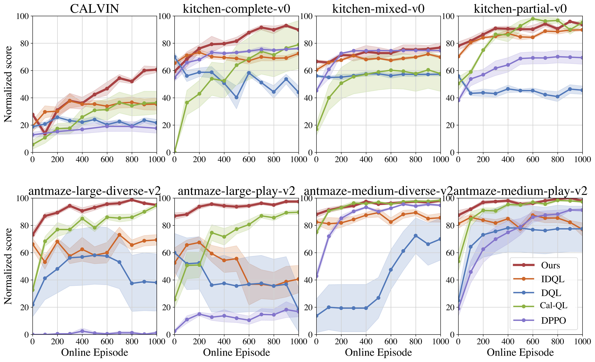

Policy Agnostic RL
Fine-Tuning Multiple Policy Classes with Actor-Critic RL
Max Sobol Mark1, Tian Gao2, Georgia Gabriela Sampaio, Mohan Kumar1, Archit Sharma2, Chelsea Finn2, Aviral Kumar1
1 Carnegie Mellon University 2 Stanford University
Max Sobol Mark1, Tian Gao2, Georgia Gabriela Sampaio, Mohan Kumar1, Archit Sharma2, Chelsea Finn2, Aviral Kumar1
1 Carnegie Mellon University 2 Stanford University
We introduce Policy-Agnostic RL (PA-RL), a single method that fine-tunes multiple policy classes, with varying architectures and sizes. It enables sample-efficient improvement of diffusion and transformer-based autoregressive policies. The core of the method is a universal policy improvement step that decomposes improvement into two steps: obtaining "optimized" actions, and then distilling these optimized actions back into the base policy. PA-RL sets a new state of the art for offline to online RL, and it makes it possible, for the first time, to improve OpenVLA, a 7B-parameter generalist robot policy, in the real world, and without further demonstrations.
The best performing models for robotics tasks - large pre-trained transformers, diffusion policies - still perform poorly on new tasks or slightly unseen conditions. Sample-efficient RL is a recipe for improving a policy’s performance cheaply and fast.
The Actor-Critic RL architecture yields fast improvement, but has only been used with small, gaussian policies. Can we get the best of both worlds, and improve large pre-trained transformers or diffusion policies through interaction?
The best-performing policy classes are hard to train with Actor-Critic RL!
To see why, let's consider what happens when we switch the gaussian policies normally used in Actor-Critic RL with either a Diffusion Policy or an autoregressive categorical policy like OpenVLA. The Critic objective will generally look something like this:
\[ \mathcal{L}^Q = \mathbb{E}_{s, a, s' \sim \mathcal{D}} \left[ \left( Q_\theta(s, a) - (r(s, a) + \gamma \hat{Q}_\theta(s', \textcolor{red}{\pi_\phi (s')})) \right)^2 \right] \]
To optimize this objective, we only need to sample from the policy \( \color{red} \pi_\phi \). Even for policies that are very large, non-differentiable, or have different sampling mechanisms like diffusion policies, we will be able to fit a critic.
The Policy objective will look like this:
\[ \mathcal{L}^\pi = - \mathbb{E}_{s \sim \mathcal{D}} \left[ Q_\theta (s, \textcolor{red}{\pi_\phi (s)}) \right] \]
Directly optimizing this requires computing \(\nabla_\phi \textcolor{red}{\pi_\phi(s)}\). This quantity is undefined for autoregressive categorical policies like OpenVLA, because their outputs are discrete[1].
Diffusion policies, on the other hand, are fully differentiable. However, back-propagating \(\nabla_\phi \textcolor{red}{\pi_\phi(s)}\) through the denoising chain is slow and unstable, because it is a very deep computation graph[2].
Takeaway: the Policy Improvement operator is the bottleneck for improving arbitrary policies.
Policy-Agnostic RL uses a universal policy improvement step that bypasses the problems from above by transforming policy improvement into supervised learning, something most policy classes will be designed to handle.
Concretely, PA-RL decomposes the policy improvement operator into 2 steps:
The policy distillation step simply runs supervised learning (i.e. Behavior Cloning) on the optimized actions, which makes PA-RL work well on multiple policy types.
PA-RL can be used to replace the policy improvement step in multiple RL algorithms. Our main results use PA-RL in conjunction with Cal-QL. For results with IQL and RLPD, see the paper.
We use PA-RL to efficiently improve both Diffusion Policies and OpenVLA on a real world robot for the first time. We improve OpenVLA without any further demonstrations, only making use of 1 hour of zero-shot language-conditioned trials, and 40 minutes of online RL fine-tuning on the real robot.
Zero-shot OpenVLA (40% success)
Fine-tuned OpenVLA (70% success)
BC Diffusion Policy (50% success)
Fine-tuned Diffusion Policy (90% success)
BC Diffusion Policy (50% success)
Fine-tuned Diffusion Policy (100% success)
PA-RL significantly improves learning efficiency and asymptotic performance of Cal-QL with diffusion policies. PA-RL attains both significantly better offline and online fine-tuning performance compared to other offline-to-online methods.
@article{sobolmark2024policy,
title= "Policy Agnostic RL: Offline RL and Online RL Fine-Tuning of Any Class and Backbone",
author= "Max Sobol Mark and Tian Gao and Georgia Gabriela Sampaio and Mohan Kumar Srirama and Archit Sharma and Chelsea Finn and Aviral Kumar",
year= "2024",
eprint= "2310.15145",
archivePrefix= "arXiv",
primaryClass= "cs.LG"
}